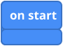
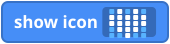
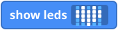
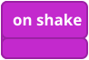
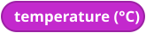
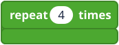
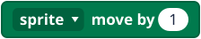
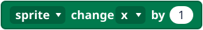
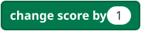

How to use this page
Find the block you need, then follow its link to the page that explains it. In MakeCode, click the group name in the list to open the group. Some blocks are under Advanced or "... more" at the bottom of a group.
Basic








Input




Pins

Music
Logic


Loops

Variables
Math
Game




Teacher notes
- The pictures are simplified drawings, and the colours are close to MakeCode but not exact.
- Where a block lives in MakeCode can change between versions of the editor. Check the group names on your screen.